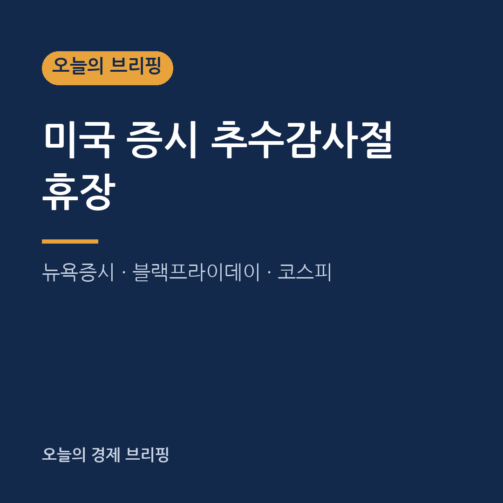
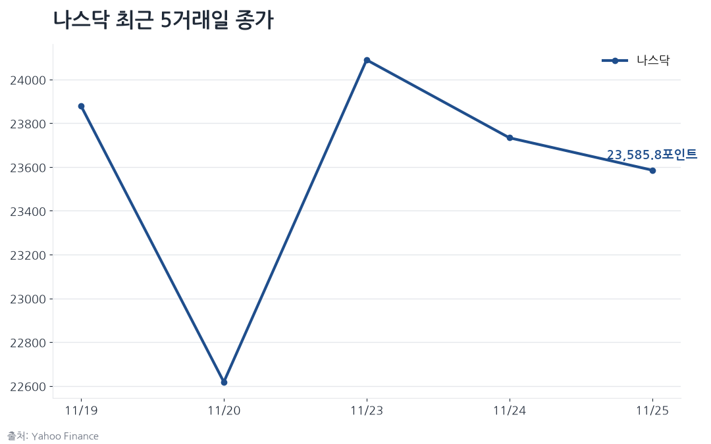

2026-11-27-0730-naver 발행 키트 · 이 페이지는 검색에 노출되지 않습니다.
제목
카테고리
오늘의 브리핑태그
본문 (그림·표 포함)
휴대폰 블로그 앱에서는 그림이 같이 붙지 않을 수 있어요. 그때는 [글자만 복사] 후 아래 이미지를 저장해 [그래프1]·[표1] 자리에 첨부하세요.

어젯밤 미국 증시 결과를 보려고 앱을 켜셨다면 새 숫자가 없어서 갸웃하셨을 거예요. 26일(현지시간)이 추수감사절이라 뉴욕 증시가 하루 통째로 쉬었거든요.
▶ 한 줄 총평 새로 나온 마감 시세는 없고, 가장 최근 장은 25일이에요. 다우는 올랐고 나스닥은 내려서 엇갈린 채로 연휴에 들어갔습니다.
▶ 마지막 마감 성적표 25일 기준으로 다우는 50,182.95, S&P500은 7,182.78, 나스닥은 23,585.80이에요. 필라델피아 반도체지수는 8,774.86으로 마쳤습니다.
25일 미국 증시 마감 (현지시간)
| 지수 | 종가 | 등락률(%) |
|---|---|---|
| 다우 | 50,182.95 | +0.33 |
| S&P500 | 7,182.78 | -0.25 |
| 나스닥 | 23,585.80 | -0.62 |
| 필라델피아 반도체 | 8,774.86 | -0.65 |
출처: Yahoo Finance
▶ 최근 5거래일은 롤러코스터였어요 나스닥만 봐도 20일에 22,617.73까지 내려갔다가 23일에 24,089.56으로 껑충 뛰었어요. 25일에는 장중 4.6%까지 밀렸다가 0.6%대 하락으로 마감했다고 해요.

한 주 내내 오르내림이 컸던 만큼, 휴장 하루가 투자자들에게는 숨 고를 시간이 됐을 것 같아요.
▶ 쉬는 날에도 뉴스는 있었어요 미국 동부에는 폭풍이 몰아쳐 55만 곳이 정전됐고 항공편 수백 편이 결항됐다고 해요. 명절 이동 철이라 불편이 컸을 거예요.
기업 소식도 있었어요. 엔비디아 AI 칩을 대량으로 사 간 실리콘밸리 업체 두 곳이 알고 보니 중국 소유였다는 보도가 나왔고, 트럼프 대통령은 다음 달 4일 애리조나 TSMC 공장 기공식에 간다고 해요.
▶ 환율·금리·유가 미 국채 10년물 금리는 25일 4.85%였어요. 26일 원·달러 환율은 1,343.42원, WTI 유가는 1.47% 오른 배럴당 84.91달러로 시세 파일에 잡혔습니다.
▶ 오늘 우리 증시에서 볼 것 미국장이 쉬어서 참고할 새 힌트가 없으니, 오늘은 우리 시장 자체 흐름이 더 중요해요. 코스피는 26일 4,711.21로 0.29% 올랐는데, 최근 며칠 변동이 컸던 만큼 오늘도 출렁임이 있는지 보세요.
그리고 블랙프라이데이인 오늘 미국 증시는 단축 거래를 해서 한국시간 28일 새벽 3시에 마감해요. 쇼핑 시즌 분위기가 지수에 어떻게 반영될지 궁금하다면 토요일 아침에 확인해 보세요.
오늘 한 줄 정리: 쉬어 간 미국장, 숫자는 어제 그대로지만 변동성은 아직 안 가라앉았어요. 여러분은 이번 주 장세, 어떻게 느끼셨나요? 댓글로 들려 주세요.
출처 (본문 맨 아래에 붙여넣기 권장)
- 뉴시안, 美증시 추수감사절 휴장·블랙프라이데이 단축거래 기사, https://news.google.com/rss/articles/CBMibEFVX3lxTFAzbDFpbW5nNHJqa1lmVWFkYzc1dllTZW9TZDF2MEp2ZkFPaXB5ZGxwMU0yWUpTdEpva3dEOE14b1ZLc29jTl9TZWI3c05sSzdUalVzYzZxdVNYelV6SXIwcnZEc1JtRENJeWZOTw?oc=5 - 머니투데이, 나스닥 장중 낙폭과 마감 기사, https://news.google.com/rss/articles/CBMiaEFVX3lxTFBmdUlNc25tV2tTZ2tVa2tsQTJrNkZjUzFOdmN2MnhONllyR1RFajctdERLdGZjVXZubXlRX2RPTnRsVUxjdzBFLTdLaEhCUmEtTjBzWUlIcE5xeUZJcENsOENrT3JCSXFm0gFuQVVfeXFMTWRzY3ppTk5RSnA2X2xaUTZEeWQzYllQSnkyXzRtYVFsOE5femZweG00bUNhLXNfczdrRmdZZEVwTlVicGgzTnNoLXlkMnloLUhIenp6c0h6QjFPTzdmYXlTX01RSjJ2ZUwwWERpTEE?oc=5 - 연합뉴스, 추수감사절 폭풍 정전·결항 기사, https://www.yna.co.kr/view/AKR20261127001051072 - 연합뉴스, 엔비디아 칩 구매 업체 관련 기사, https://www.yna.co.kr/view/AKR20261127004500091 - 연합뉴스, TSMC 애리조나 기공식 관련 기사, https://www.yna.co.kr/view/AKR20261127003800071 - 한국경제, 코스피 급등 관련 기사, https://www.hankyung.com/article/2026112632131 - 강릉뉴스, 블랙프라이데이 단축거래 기사, https://news.google.com/rss/articles/CBMib0FVX3lxTFAwMUJDRkpGVUUzYUhINWh1eHFsR3JmVWs0S1owTDFRanlUYVh2amdYVEtzSUlwekp4NXJ2UDZkME15ZnJld2lIeTg1bWtsS0hiVVVJQUZ1X0hjM0RVelVpVkFjME10dzhNZVVwMFROQQ?oc=5 - 시세: Yahoo Finance